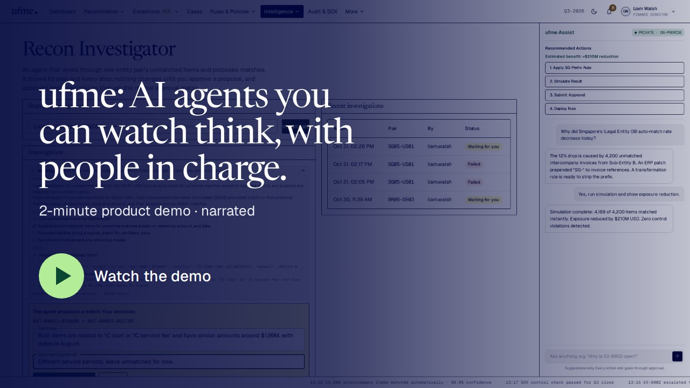

ufme: open-source intercompany reconciliation with transparent AI agents
Open-source intercompany reconciliation platform with transparent AI agents: auto-matching, human approval of every change, and an audit-ready trail. Self-hosted, Apache 2.0, works with any LLM (OpenAI, Azure OpenAI, Anthropic, Gemini or local models).

What it does
- Matches intercompany ledger lines one-to-one and one-to-many, and auto-matches only when it can prove its confidence.
- AI agents show their plan, todo list and every step, and wait for a person to approve any change.
- Approval matrix with four-eyes control, tamper-evident audit trail and tenant data isolation.
- Agent operations dashboard for usage, cost, anomalies and data leaving the company.
Created by Arghya Chakraborty.